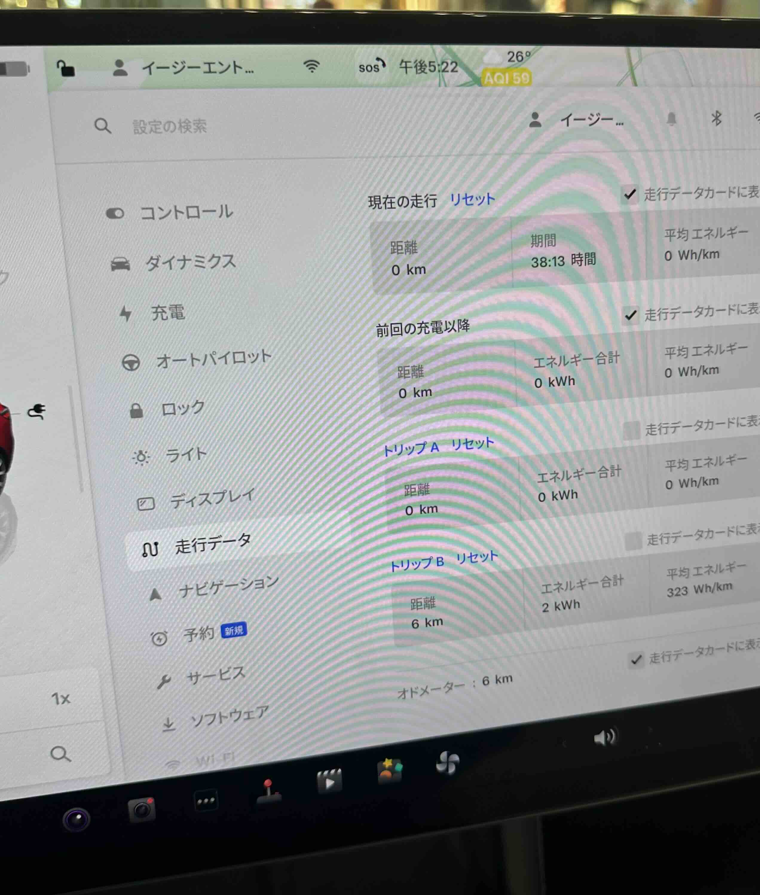

Véhicules Électriques | Original, traduit par l'IA
Neta
- Après la mise à niveau, le système vous invite toujours à mettre à jour à nouveau.
- Les volumes de la musique et de la navigation peuvent se désynchroniser. Lorsque vous essayez d’augmenter le volume de la musique à l’aide des commandes du volant, le volume de la navigation augmente de manière inattendue. Cela peut être frustrant, surtout si vous préférez garder le son de la navigation désactivé.
- Si la batterie est à plat et que vous ne parvenez pas à la recharger, vous devrez redémarrer la voiture en ouvrant le capot, en débranchant manuellement la batterie, puis en la rebranchant pour réinitialiser le système.
Tesla
- La version chinoise de Tesla ne permet qu’à Apple Music et Apple Podcasts de diffuser du contenu international et ne dispose pas de support VPN intégré.
- Une forte prise en charge de l’internationalisation (i18n), offrant une large gamme d’options linguistiques.
- La convention de dénomination pourrait être plus claire. Par exemple, il n’y a pas de “Model 4”—au lieu de cela, Tesla utilise des noms comme “Enhanced Model 3” ou “Model Y 2024”, ce qui peut prêter à confusion.
- Dans la Model 3, vous ne pouvez pas utiliser de commandes vocales pour ajuster le volume.
- Après avoir changé la langue du système, un redémarrage est nécessaire pour que les modifications prennent effet.
- Le contrôle de la langue est pris en charge dans plusieurs domaines, y compris l’interface système, le contenu et les contrôles sonores.
Zeeker
- Classé deuxième sur le marché des véhicules électriques haut de gamme, juste derrière Tesla.
- Support médiocre pour les logiciels étrangers, limitant sa fonctionnalité pour les utilisateurs internationaux.
- Les commandes vocales pour le réglage du volume sont disponibles, mais elles sont uniquement en chinois.
Xiaopeng
- Support limité pour les logiciels étrangers, rendant difficile l’utilisation de certaines applications internationales.
- La commande vocale “Little P” est utilisée pour ajuster le volume, mais cette fonctionnalité est principalement destinée aux utilisateurs chinois.

